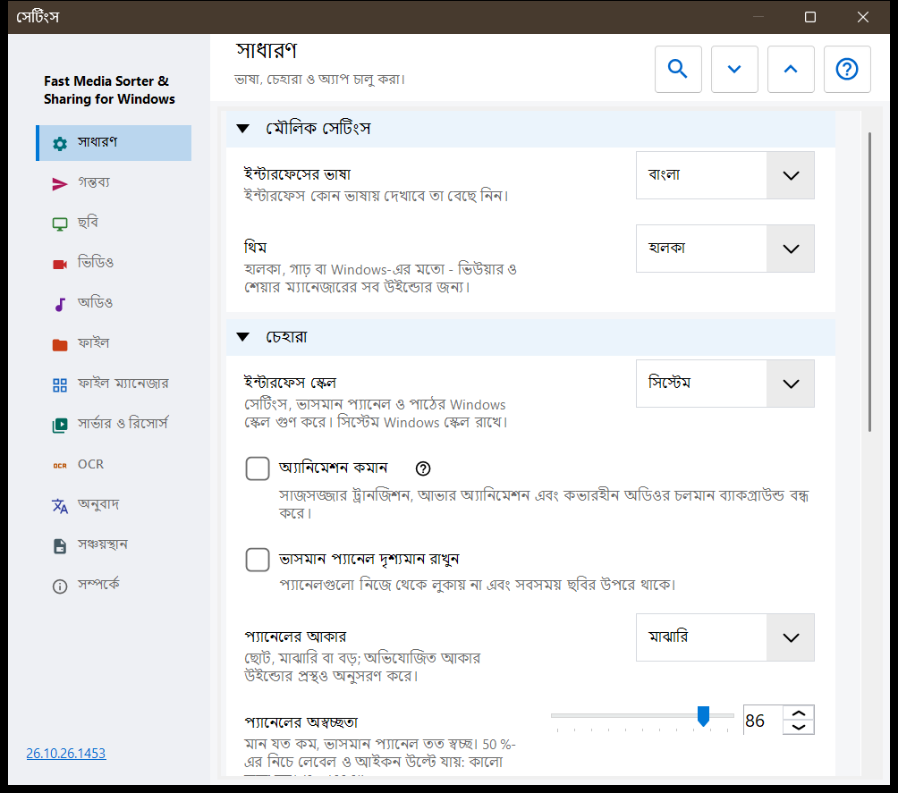
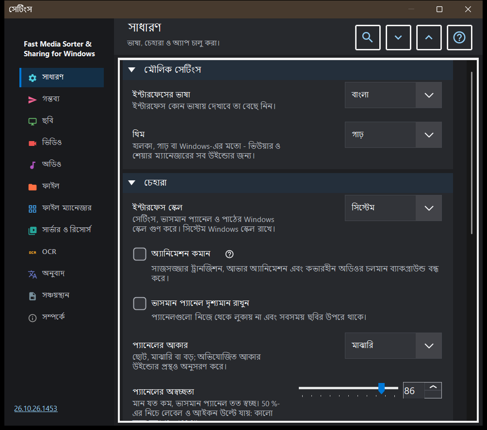

সেটিংস
সেটিংস
এটি কীসের জন্য
সেটিংস উইন্ডোতে ভিউয়ারের সব বিকল্প আছে। এটি F2 চেপে, টুলবারের সেটিংস বোতামে, অথবা ছবি প্যানেলের ফাইল ম্যানেজারে সেটিংস.. বোতামে খোলে; ওই বোতাম সরাসরি ফাইল ম্যানেজার পৃষ্ঠায় নিয়ে যায়। পৃষ্ঠাগুলো বাঁ দিকের সাইডবারে তালিকাভুক্ত, আর পৃষ্ঠার গ্রুপগুলো গুটিয়ে রাখা যায়।


এই ক্রমে
- সাইডবারে একটি পৃষ্ঠা বেছে নিন, অথবা কোনো বিকল্প খুঁজতে সেটিংস খুঁজুন ঘরে একটি শব্দ লিখুন।
- পৃষ্ঠার সব গ্রুপ খুলতে বা গুটিয়ে নিতে সব খুলুন ও সব গুটিয়ে নিন ব্যবহার করুন।
- প্রয়োজনীয় বিকল্পগুলো বদলান।
- উইন্ডো বন্ধ করতে Esc চাপুন।
উপাদানসমূহ
সাধারণ
ভাষা ও থিম (থিম), তারপর ভাসমান প্যানেলের চেহারা: ইন্টারফেস স্কেল, অ্যানিমেশন কমানো, পিন করা, আকার, অস্বচ্ছতা, কোণ, ছবির উপরের তথ্য এবং মাউস কার্সর লুকানো; প্যানেলগুলো তাদের জায়গায় ফিরিয়ে দিন বোতাম সরানো সব প্যানেলকে তাদের স্বাভাবিক জায়গায় ফিরিয়ে দেয়। চালু নামের গ্রুপ ঠিক করে শুরুতে কী হবে (শুরুতে খোলা, শেষ ফাইল থেকে চালিয়ে যাওয়া, নতুন উইন্ডোর অনুমতি), এবং তাতে স্বাগত ধাপগুলো আবার দেখান আছে, যা প্রাথমিক সেটআপ আবার খোলে। উন্নত সেটিংস গ্রুপ অতিরিক্ত সেটিংস রপ্তানি ও আমদানি করে এবং ডিফল্ট মান ফিরিয়ে আনে।
গন্তব্য
যে দশটি ফোল্ডারে 1-9 ও 0 কী ফাইল সরিয়ে নেয়; উপরের সারির অঙ্কের সঙ্গে Shift চাপলে একই ফোল্ডারে কপি হয়। টেবিলে প্রতিটি কী-র জন্য একটি সারি আছে: একটি সারি বেছে নিয়ে এই পিসির একটি ফোল্ডার.., রিসোর্স (SFTP বা SMB ফোল্ডার) বা পরিষ্কার করুন ব্যবহার করুন, অথবা সারির উপর একটি ফোল্ডার টেনে ছেড়ে দিন। গন্তব্য টেবিলের চেহারা গ্রুপ ছবির উপরে দেখানো টেবিলের অবস্থান, প্রস্থ, লেখার আকার, অস্বচ্ছতা ও দৃশ্যমান সারি ঠিক করে, আর ছবির উপরে গন্তব্য টেবিল বিকল্প সেই টেবিল চালু বা বন্ধ করে।
ছবি
ছবি কীভাবে খোলে ও দেখায়: নতুন ছবির স্কেল, EXIF ট্যাগ অনুযায়ী স্বয়ংক্রিয় ঘূর্ণন, মাউস হুইলে জুম, ভিডিও প্লেয়ারের মাধ্যমে অ্যানিমেটেড গ্রাফিক্স, এবং ছবির আকার, ফাইলের আকার ও তারিখের তথ্য। ছবির পটভূমি গ্রুপ ছবির চারপাশের রং, পরিপ্রেক্ষিত পটভূমি এবং আভা (গতিশীল, অ্যানিমেটেড, গতি) ঠিক করে। স্লাইডশোর আচরণ গ্রুপ বিরতি, এলোমেলো ক্রম, হাতে নেভিগেট করলে শো থামবে কি না, এবং শো চলাকালীন ইন্টারফেস কী করবে তা ঠিক করে। উন্নত অংশে উচ্চ মানের স্কেলিং ও থাম্বনেইল কার্ডের আকার আছে।
ভিডিও
ভিডিও ফাইল ব্রাউজিংয়ে অংশ নেবে কি না, স্বয়ংক্রিয় প্লে, ক্লিপের শেষে কী হবে, অবস্থান মনে রাখা এবং একই শব্দ: অডিও ও ভিডিও। পরের গ্রুপগুলোতে পছন্দের অডিও ও সাবটাইটেল ভাষা এবং প্লেব্যাক নিয়ন্ত্রণ আছে: একটি ক্লিকে কী হবে, নিয়ন্ত্রণ দেখানোর বিলম্ব, বিরতিতে নিয়ন্ত্রণ এবং সিকের তিনটি ধাপ।
অডিও
অডিও ফাইল ব্রাউজিংয়ে অংশ নেবে কি না, ট্র্যাকের শেষে কী হবে, ডিফল্ট ভলিউম এবং শব্দ বন্ধ রেখে শুরু। তথ্য ও নিয়ন্ত্রণ গ্রুপে সব সময় দৃশ্যমান অডিও বার, প্রচ্ছদহীন ফাইলের জন্য ভিজ্যুয়ালাইজার এবং স্লিপ টাইমার আছে।
ফাইল
ফাইল পরিচালনা: কপির পর পরেরটিতে যাওয়া, নামের সংঘর্ষে এবং কপি বা সরানোর পরে কী হবে, ফাইল অপারেশনে স্ট্যাটাস বার, অনুপস্থিত গন্তব্য ফোল্ডার তৈরি, রিসাইকেল বিনে মুছুন এবং মোছার নিশ্চিতকরণ। ফাইলের ধরন গ্রুপে সাবফোল্ডার, এক্সটেনশন, নথি, লেখা প্রিভিউয়ের আকার ও অন্যান্য ফাইল আছে। পরের গ্রুপগুলো সাম্প্রতিক ফাইল ও ফোল্ডার, আর্কাইভের সীমা এবং সুরক্ষিত .fd-sec ফাইল ঠিক করে। কী ও সংযোগ গ্রুপে কীবোর্ড শর্টকাট বোতাম আছে, যা হটকি উইন্ডো খোলে, আর আছে ছবি ও ভিডিওর ফাইল সংযোগ।
ফাইল ম্যানেজার
ছবি প্যানেলের ফাইল ম্যানেজারের বিকল্প: প্রদর্শন মোড (টাইল বা তালিকা), বিষয়বস্তু ফিল্টার, লুকানো ফাইল এবং মিডিয়া নয় এমন ফাইলের জন্য করণীয়। অবস্থান গ্রুপ ঠিক করে কোন স্থানগুলো দেখানো হবে (স্থানীয়, রিসোর্স, ডিভাইস), এবং তাতে বাছাই মনে রাখুন আছে।
সার্ভার ও রিসোর্স
সার্ভার ও নেটওয়ার্ক ফোল্ডার তালিকায় সেই SFTP ও SMB রিসোর্স আছে, যেগুলো ভিউয়ার ব্রাউজ করতে এবং গন্তব্য হিসেবে ব্যবহার করতে পারে। Android / SFTP গ্রুপ এই পিসির ফোল্ডার SFTP-র মাধ্যমে Android অ্যাপের জন্য প্রকাশ করার জন্য; তাতে সংযোগ নির্দেশিকা এবং Android ক্লায়েন্টের জন্য SFTP সার্ভার পরিচালনা করুন.. বোতাম আছে। বিনিময় সার্ভারের প্রতিটি এন্ট্রিতে, যতক্ষণ তা সংযুক্ত এবং তার সার্ভার সেটিংসের মানক রাখে, মানক হিসেবে সংরক্ষণ করুন.. ও মানক পড়ুন.. বোতাম থাকে: প্রথমটি চিহ্নিত সেটিং গ্রুপগুলো সার্ভারে আপনার অ্যাকাউন্টের মানক হিসেবে সংরক্ষণ করে, দ্বিতীয়টি চিহ্নিত গ্রুপগুলোর মান এই কম্পিউটারে আনে। পথ, পাসওয়ার্ড, কী ও উইন্ডোর আকার এই কম্পিউটারেই থাকে, সার্ভারের পরিচালক মানক পড়তে পারেন, আর এখানে পরের পরিবর্তনগুলো স্থানীয় থাকে যতক্ষণ না আপনি আবার মানক পড়েন।
OCR
OCR চালু করুন লেখা শনাক্তকরণ চালু করে, আর স্বয়ংক্রিয়ভাবে চালান সেটিকে নিজে থেকে চলতে দেয়। লেখা শনাক্তকরণ গ্রুপ উৎস ভাষা, মান, মোড এবং ভাষার ডেটা ডাউনলোড ঠিক করে।
অনুবাদ
সেবা (অনুবাদ সেবা) ও লক্ষ্য ভাষা (অনুবাদের ভাষা) বেছে নিন; অন্য ঘরগুলোতে সেবার ঠিকানা, স্থানীয় Ollama সার্ভার, মডেল ও API কী আছে। ছবির উপর অনুবাদ গ্রুপ ছবির উপরে অনুবাদ প্যানেলের অস্বচ্ছতা ও দৃশ্যমানতা ঠিক করে।
সঞ্চয়স্থান
প্রতিটি ক্যাশের জন্য পরিষ্কার করুন বোতামসহ ক্যাশের সীমা: ডিকোড করা ছবি, ছবি প্যানেলের থাম্বনেইল, আর্কাইভ ও নেটওয়ার্ক রিসোর্স। ডিস্কে OCR ক্যাশে ফলাফল ডিস্কে ক্যাশ করুন, তার নিজস্ব সীমা ও পরিষ্কার করুন বোতাম আছে।
সম্পর্কে
পণ্যের তথ্য ও লিংক: আপডেট, সেটিংস রিসেট করুন, সংশ্লিষ্ট প্রকল্প, প্রোগ্রামের সহায়তা, সাইট, GitHub, রিলিজ, গোপনীয়তা পৃষ্ঠা, MIT লাইসেন্স এবং তৃতীয় পক্ষের বিজ্ঞপ্তি। লগ লেখকের কাছে পাঠান একটি সম্মতির উইন্ডো দেখায়, যাতে আর্কাইভে কী যাবে তার তালিকা থাকে, তারপর আর্কাইভটি আপনার মেইল প্রোগ্রামের হাতে তুলে দেয়; প্রোগ্রাম এর জন্য কোনো নেটওয়ার্ক সংযোগ খোলে না।
নথি
সাজানোর ফিল্টার থেকে আলাদাভাবে PDF রিডার চালু করুন। একক পৃষ্ঠা, একটানা স্ক্রল বা দুই পৃষ্ঠা, রং, জুম, অনুসন্ধান ও ক্যাশ সীমা বেছে নিন। পৃষ্ঠার বোতাম পৃষ্ঠা এবং ফাইলের বোতাম ফাইল বদলায়। লেখার নিয়ন্ত্রণ B/N, সংখ্যা ও Delete গ্রহণ করে; Esc দৃশ্যে ফেরায়। চেহারা পুনরায় সেট করলে অবস্থান ও নামের বুকমার্ক থাকে। উচ্চস্বরে পড়া ইনস্টল করা Windows কণ্ঠ ব্যবহার করে। পাসওয়ার্ড সেশনে থাকে। স্থানীয় অস্থায়ী কপি মূল ফাইল সরাতে দেয়। সাধারণ রপ্তানিতে পড়ার ইতিহাস, বুকমার্ক ও নথির আলাদা সাজসজ্জা থাকে না। টেক্সট ফাইলের নিজস্ব গ্রুপ আছে। «টেক্সট ফাইলের পূর্ণ পাঠ» সেগুলোকে ফন্ট, থিম, লাইন নম্বর ও অনুসন্ধানসহ খোলে; সম্পাদনার সীমার চেয়ে বড় ফাইল অংশে অংশে পড়া হয়। «টেক্সট ফাইল সম্পাদনা» Ctrl+E যোগ করে: সংরক্ষণে এনকোডিং বদলায় না এবং অসংরক্ষিত পরিবর্তন একটি এনক্রিপ্ট করা খসড়ায় থাকে। ফাইলের মেনুর «টেক্সট হিসেবে খুলুন» অন্য যেকোনো ফাইলকে টেক্সট হিসেবে দেখায়।